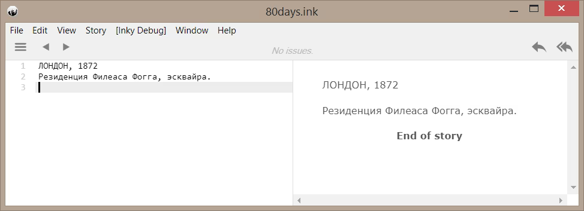
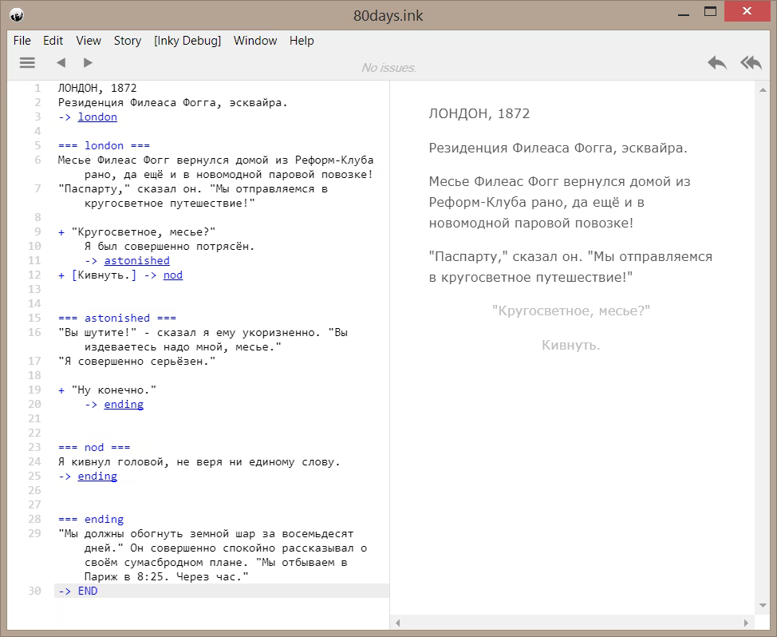

Писать интерактивную литературу сейчас проще, чем когда-либо раньше — ведь для этого есть так много инструментов. Twine, один из движков для веб-игр, стал особенно популярным благодаря его дружественности к автору и наличию визуальных инструментов, позволяющих планировать вашу историю в виде схемы “из стикеров и ниток”.
Напротив, ink изначально создавался не для веба. Он был создан как как подключаемый компонент для интеграции в классический игровой движок. В компании inkle мы используем его почти для всех наших игр — от 80 Days (изначально для мобильных платформ) до ещё не вышедшей Heaven’s Vault для PS4 и PC. Поскольку мы открыли исходный код ink, множество инди-разработчиков использовали его в своих играх, в частности, в Bury Me My Love и Where the Water Tastes Like Wine, номинантах IGF 2018 года.
На самом деле, писать истории для веба на ink просто! Это пошаговое руководство продемонстрирует вам, как написать простую игру на Ink, экспортировать её в виде веб-страницы, и опубликовать её в интернете.
Это руководство не требует знания ink или веб-технологий — здесь будет предоставлена вся необходимая информация для начала работы, даже если у вас нет никакого опыта. Для тех, кто хочет узнать больше, я предоставлю ссылки на необходимую информацию.
Вот что вы узнаете из этого руководства:
Вы можете пропускать или бегло просматривать те разделы, с которыми вы уже знакомы.
Это руководство расскажет вам лишь о самых простых и понятных возможностях языка, которые позволят вам написать простую CYOA-игру. Если вы захотите сделать что-то посложнее, то в любой момент можете обратиться к официальной документации по языку ink, в которой описано всё, что нужно знать — от самых основ языка до более сложных структур.
Мы будем использовать Inky — официальный редактор для создания игр на Ink. Итак, вперёд — давайте его скачаем!
Запустив редактор, вы увидите окно с двумя колонками. Слева — поле текстового редактора, где вы будете писать код игры, а справа — окно предварительного просмотра, в котором можно в вашу игру поиграть.
Первое, что стоит знать про ink — это просто текст, но со специальной разметкой, которая делает его интерактивным.
Итак, давайте напишем предложение в редакторе слева, и оно появится в окне справа. Можно добавить несколько абзацев.

Теперь давайте посмотрим на простой пример ветвящейся истории. Синяя разметка на скриншоте ниже может выглядеть пугающе, если вы раньше не программировали (много символов!), но мы сейчас детально её разберём, чтобы вы могли понять, как это работает.

Полный текст ink-сценария 80_days.ink:
ЛОНДОН, 1872
Резиденция Филеаса Фогга, эсквайра.
-> london
=== london ===
Месье Филеас Фогг вернулся домой из Реформ-Клуба рано, да ещё и в новомодной паровой повозке!
"Паспарту," сказал он. "Мы отправляемся в кругосветное путешествие!"
+ "Кругосветное, месье?"
Я был совершенно потрясён.
-> astonished
+ [Кивнуть.] -> nod
=== astonished ===
"Вы шутите!" - сказал я ему укоризненно. "Вы издеваетесь надо мной, месье."
"Я совершенно серьёзен."
+ "Ну конечно."
-> ending
=== nod ===
Я кивнул головой, не веря ни единому слову.
-> ending
=== ending
"Мы должны обогнуть земной шар за восемьдесят дней." Он совершенно спокойно рассказывал о своём сумасбродном плане. "Мы отбываем в Париж в 8:25. Через час."
-> END
Скопируйте и вставьте его в левую панель Inky, а затем поиграйте в правой панели. Чтобы начать игру заново, нажмите двойную стрелку справа вверху. Одинарная стрелка там же отменяет последний сделанный выбор.
Во время игры вы можете менять текст слева, и он тут же будет обновляться в окне предварительного просмотра, даже если вы сейчас в середине игры. Если вы нажмете Alt и кликнете на слово в панели справа — будет автоматически подсвечена соответствующая строка в левой панели с исходным кодом. Это очень полезно, когда игра становится довольно сложной.
В коде этой игры есть три основных элемента: узлы, переходы и выборы. Разберёмся с ними по очереди.
История состоит из множества связанных фрагментов, которые в терминологии ink называются узлами. Начало узла обозначается как минимум двумя знаками “равно” слева от имени узла, и по желанию — справа (например, === london ===). Синяя подсветка в Inky означает, что разметка Ink распознана и написана синтаксически корректно.
Примечание переводчика:
В имени узла допустимо использовать русские буквы — например, === лондон === (спасибо fireton за issue #225!), но Inky не подсвечивает такие имена синим цветом.
Весь текст под заголовком узла относится к этому узлу.
Имя узла (в котором не может быть пробелов) не отображается в самой игре; оно используется для ссылок на фрагменты нашего интерактивного повествования.
Раз уж мы заговорили о ссылках, вот как выглядит переход:
-> london
Используя стрелку перехода (вводится как “минус” и “знак больше”), мы даём указание перейти на другой узел. При воспроизведении истории переход произойдёт автоматически и незаметно для игрока. Например, в самом начале нашей истории, после отображения вступительного параграфа, у нас есть переход “-> london”, который переносит игрока к узлу с этим именем.
Для того, чтобы закончить игру, есть специальный вид перехода — к невидимому узлу “END”. Попробуйте удалить строку “-> END”: Inky покажет предупреждение. Если вы наведёте мышку на предупреждение, будет выдано сообщение о незавершенной концовке (loose end).
Это важная функциональность ink, которая поможет вам, когда ваша история станет более сложной. Когда вы начнете писать ветвящийся сюжет, то поначалу у вас будут незавершённые ветки. Эти предупреждения будут служить напоминанием, какие ветки сюжета вам осталось дописать.
И наконец, самая важная функциональность, которая нам нужна, чтобы стать настоящими профи интерактивной литературы — конечно же, выбор:
+ "Вокруг света, месье?"
Варианты выбора в ink выглядят как маркированный список. Зачастую они объединены с переходами, чтобы при выборе произошел переход к другому узлу:
+ [Кивнуть.] -> nod
Есть несколько моментов, на которые стоит обратить внимание при написании вариантов выбора.
По умолчанию текст варианта выбора отображается в виде активной ссылки, а после клика по ней этот же текст отображается на экране. Однако если вы хотите, чтобы текст выбора отображался только в самом варианте выбора, вы можете взять текст в [квадратные скобки], как во втором примере.
Этот прием часто используется для того, чтобы различить выбор, указывающий на выполняемое действие (“Покачать головой”) и выбор, который является частью игрового текста (“Я покачал головой.”). Например:
+ [Покачать головой.] -> nod
+ Я покачал головой. -> nod
== nod ==
Это казалось невероятным.
Первый вариант выдаст текст «Это казалось невероятным.» после выбора этого варианта, в то время как второй вариант выдаст «Я покачал головой. Это казалось невероятным.».
Вы можете добавить дополнительный текст после выбора, и он отобразится после выбора этого варианта. Например:
+ "Вокруг света, месье?"
Я был совершенно потрясён.
"Вы шутите!" - сказал я ему укоризненно.
-> astonished
=== astonished ===
...и т.д....
выдаст тот же текст, что и:
+ "Вокруг света, месье?" -> astonished
=== astonished ===
Я был совершенно потрясён.
"Вы шутите!" - сказал я ему укоризненно.
...и т.д....
Ink очень гибок — он предлагает множество способов структурировать игровой текст.
И последняя заметка по структуре ink-сценария: воспроизведение всегда начинается с самого начала файла и идёт вниз. Однако если весь ваш контент разбит на узлы, необходимо, чтобы в самом начале скрипта у вас был переход на стартовый узел (например -> intro).
Теперь я предлагаю вам поэкспериментировать с игрой — попробуйте добавить больше текста, дополнительные варианты выбора, другие концовки. В качестве упражнения — попробуйте превратить вступительный абзац в отдельный узел.
Рассмотренные нами возможности позволяют сделать то же самое, что и бумажные книги-игры. Но что, если мы захотим показывать разный текст и варианты выбора в зависимости от того, что игрок делал раньше?
Движок ink запоминает посещения каждого узла, и вы можете проверять это позже. Например, вот как можно определить, видел ли игрок узел под названием “catacombs”:
{ catacombs:
Здесь было темнее, чем в парижских катакомбах.
}
В фигурных скобках вы можете написать несколько строк текста, а также вставлять переходы и варианты выбора.
Однако есть более простой способ создания вариантов выбора, отображаемых при определенных условиях. В примере ниже мы показываем вариант выбора, только если игрок уже посещал определенный узел:
+ {catacombs} [Сказать ей о вашей находке] -> tell_her
Если вы хотите инвертировать условие — убедиться, что игрок НЕ посещал катакомбы — вы можете просто приписать “not”:
+ {not catacombs} [Посетить катакомбы] -> catacombs
Наконец, можно использовать “and”, “or” и круглые скобки для создания сложных условий. Вот несколько примеров:
{ catacombs and not pick_up_ring:
"Ты его так и не нашёл?" — требовательно спросила она.
+ [Извиниться.] -> apologise
}
{ (catacombs or cross_river or sing_in_rain) and not buy_new_shoes:
Мои ботинки до сих пор насквозь мокрые.
}
Мы рассмотрели только часть возможностей ink. Если вы хотите узнать, что ещё может ink, или получить более детальные знания о том, что вы уже знаете, обратитесь к официальной документации. Вот лишь немногое из того, что ждёт вас там:
Следующий шаг — сохраним нашу игру в виде файлов, которые можно загрузить на какой-нибудь хостинг. Чтобы сделать это в Inky, выберите File, потом “Export for web...”, и введите название вашей игры. Оно будет использовано для видимого заголовка страницы (поэтому смело используйте пробелы и заглавные буквы!), и для имени папки, куда будут сохранены файлы игры.
Когда вы будете в дальнейшем редактировать игру, и в особенности если вы будете менять внешний вид игры (см. ниже), используйте “Export story.js only...” и сохраните файл в ту же папку, перезаписывая “yourStoryName.js”. Это единственный файл, который нужно обновлять, когда вы меняете содержимое ink-сценария. Все остальные файлы — это часть веб-шаблона, и если вы изменили его внешний вид, вряд ли вы хотите потерять ваши изменения, перезаписав все файлы при экспорте.
Ну вот, почти всё готово. Вы можете перейти к шагу “Загрузить на itch.io”, если хотите. Однако, если вы хотите добавить картинки, вставить подпись, или изменить внешний вид вашей игры, читайте дальше!
ink был разработан для единственной задачи: написания интерактивного текста. Мы боролись с искушением перегрузить язык дополнительными возможностями, чтобы сохранить баланс между мощью, гибкостью и простотой.
Например, язык ink не содержит встроенных команд для вставки изображений, поскольку реализация этой функции может быть совершенно разной для разных видов игр. Если вы пишете с помощью ink диалоги для 3D-игры, то команда для вставки изображения не будет иметь никакого смысла.
Однако, начиная с версии 0.10.0 редактор Inky предоставляет ряд дополнительных возможностей, которые можно использовать при экспорте игры для веба. Все они используют теги ink — специальные текстовые аннотации, которые можно добавлять к каждой строке текста либо между ними. Теги не видимы для читателя, но могут быть прочитаны игровым движком, или, в нашем случае, веб-шаблоном.
Вот как можно вставить изображение:
# IMAGE: imageName.jpg
Файл изображения должен быть в той же папке, что и другие файлы игры. Вы можете положить его в подпапку и указать путь:
# IMAGE: myImages/imageName.jpg
Вы можете добавить тег IMAGE и в конец строки. Изображение всегда будет показано над игровым текстом.
На фото выше изображена собака. # IMAGE: dog.jpg
Это потому, что все теги связаны с определенными строками текста, и если в строке всего один тег, он будет ассоциирован со строчкой текста под ним.
Ещё одна функция веб-шаблона Inky — тег clear:
# CLEAR
Эта команда удалит весь текст из игровой области, после чего новый текст будет добавляться с верха страницы. Убедитесь, что вы вставляете этот тег сразу после варианта выбора! Если вы вставите его посреди текста, та его часть, что перед тегом, будет удалена до того, как игрок успеет его прочесть.
Чтобы использовать тёмную тему оформления, поставьте это в самом начале вашего ink-сценария:
# theme: dark
Веб-шаблон прочитает этот глобальный тег и включит встроенную тёмную тему. (Для этого он использует класс “dark”, применяющийся для всей страницы. Селектор “.dark” в CSS-файле описывает настройки тёмной темы, которые перекрывают основную.)
Чтобы указать имя автора, укажите это в начале вашего ink-сценария:
# author: Ваше Имя
Веб-шаблон найдёт эту строку и вставит подзаголовок с вашим именем под названием игры.
Вы также можете настраивать отображение отдельных строк текста, используя CSS-классы. Чтобы назначить строке класс, добавьте к ней тег в вашем ink-сценарии:
Вы направились в лес.
На земле видна лужа крови. # CLASS: danger
Вы можете сообщить браузеру, как будет выглядеть класс «danger», добавив следующее в ваш style.css:
.danger {
color: red;
}
Слово, начинающееся с точки, определяет стилевой класс в CSS. Мы рассмотрим эту тему в разделе “Как менять шрифты и цвета”.
Шаблон Inky содержит встроенный стиль для класса “end”, если вы захотите показать сообщение об окончании игры по центру и жирным шрифтом. Чтобы это сделать, добавьте следующие строки в конец вашей истории:
# CLASS: end
Конец игры
-> END
Разберём пример подробно:
Чтобы поменять стиль CSS-класса end, поищите .end в конце CSS-файла.
Примечание переводчика:
В текущей версии Inky есть баг, из-за которого класс end отображается некорректно. Чтобы это исправить, откройте style.css и удалите строку color:white из описания класса “.end”.
В веб-шаблоне Inky есть ещё одна встроенная функция. Если вы вставите тег “# RESTART”, то движок, дойдя до него, немедленно сотрёт весь игровой прогресс (включая историю выборов, сделанных игроком, и значения всех переменных) и начнёт игру сначала. Поскольку это действие происходит немедленно, вы наверняка захотите вставить его после выбора, например так:
Вы умерли!
+ Попробовать ещё раз.
# RESTART
-> END
Хотя переход на “-> END” никогда не будет достигнут, но он там необходим, чтобы Inky не жаловался на незавершенную концовку.
На шаге экспорта у вас получилась папка со следующими файлами:
Чтобы поменять любой из этих файлов, откройте их в текстовом редакторе. Я рекомендую Sublime Text, но вы можете воспользоваться Notepad++ в Windows, TextEdit в Mac, или любым другим редактором, к которому вы привыкли. Но только не Microsoft Word!
Шрифты и цвета описываются в CSS-файле — style.css. Если вы его откроете, вы увидите набор блоков, наподобие такого:
body {
font-family: 'Open Sans', sans-serif;
font-weight: lighter;
background: white;
}
Каждый блок начинается с имени — например, «body» или «h1», которое в терминологии CSS называется селектор. Селектор описывает признаки, по которым браузер выбирает определенные элементы на странице, чтобы применить к ним соответствующий стиль. В примере выше он выбирает элемент body, который соответствует странице целиком.
Шрифты в параметре font-family указаны в порядке приоритета, и браузер выберет из них первый доступный. В примере выше Open Sans — это веб-шрифт, который импортирован в самом начале CSS-файла. Если по какой-то причине этот шрифт не может быть загружен, браузер перейдёт к следующей позиции списка — “sans-serif”, шрифту без засечек по умолчанию.
Примечание переводчика:
Шаблон Inky по умолчанию использует для заголовков шрифт Quattrocento, в котором нет русских букв. Поэтому я бы порекомендовал отредактировать style.css, заменив первую строчку файла на
@import url('https://fonts.googleapis.com/css?family=Open+Sans:300,700|Lora:700');
и заменить Quattrocento на Lora в 16-й строке, в стиле для h1, h2.
Вы можете выбрать веб-шрифт на сайте fonts.google.com, и использовать их, следуя инструкциям — сайт предоставляет вам готовые строки @import, которые вы можете вставить самостоятельно. Также вы можете использовать шрифт, который имеется на компьютере пользователя, но проблема в том, что этот список довольно ограничен.
Базовые варианты шрифтов могут быть заданы как serif (шрифт с засечками по умолчанию) и sans-serif (шрифт без засечек по умолчанию).
Вот некоторые из CSS-селекторов и правил в файле:
h1
Это означает «заголовок уровня 1» — т.е. самый большой заголовок, который используется для названия игры вверху страницы. Если вы хотите изменить размер заголовка, нужно изменить свойство font-size. А с помощью сокращения “h1, h2” можно задать правила для двух селекторов сразу — заголовков 1 и 2 уровня. Последний используется для имени автора, если вы указали тег # author: Your Name в начале вашего ink-сценария.
.header
Имя, начинающееся с точки — это имя класса. Селектор в примере выбирает элемент, являющийся контейнером для заголовка и имени автора. Часто в HTML/CSS элементы находятся внутри контейнеров, чтобы лучше структурировать содержимое или более точно контролировать отступы и размещение.
p
Это означает «абзац». Это селектор для абзацев основного игрового текста на странице. Если вы хотите поменять размер или цвет шрифта игрового текста — отредактируйте стиль для него.
a
Это селектор для ссылок, по которым можно кликать (в HTML терминологии это тег гиперссылки). Ссылки используются на нашей странице для оформления вариантов выбора, но это не единственное возможное их применение.
p.choice
Это переводится как “абзац с классом 'choice'". Если бы там было написано .choice, это бы значило «что угодно с классом choice». Варианты выбора на нашей странице на самом деле являются специальным образом оформленными абзацами, которые содержат ссылки.
a:hover
Здесь :hover — это псевдо-класс, и он используется для выбора элемента, когда на этот элемент наведен указатель мыши.
CSS применяет стили в соответствии с их приоритетами, которые зависят от того, насколько специфичен селектор (чем выше специфичность, тем выше приоритет) и положения в файле (чем ближе к концу файла, тем выше приоритет). Это позволяет вам определять начальные стили в общих чертах, а затем постепенно переопределять их. Например, сначала мы определяем стиль для h2, а затем с помощью селектора .dark h2 переопределить часть стиля для h2: мы меняем цвет, когда тёмная тема активна (т.е. когда класс .dark применен ко всей странице)
Для того, чтобы узнать о разнообразных возможностях изменения оформления с помощью одного лишь CSS, я бы рекомендовал погуглить что-то вроде «CSS tutorial» — есть множество полезных ресурсов в интернете! Например, Учебник CSS, или руководства с W3C Schools — CSS tutorial и HTML tutorial. HTML — это язык для описания разметки страницы, поэтому если вы хотите поменять расположение элементов и изменить вид игры ещё сильнее, я бы рекомендовал изучить и HTML тоже.
Выберите шрифт на Google Fonts, и вставьте строку @import в самое начало вашего CSS-файла, например:
@import url('https://fonts.googleapis.com/css?family=Lobster');
Затем измените стиль для заголовка:
h1 {
font-family: 'Lobster', cursive;
font-size: 80pt;
text-align: center;
}
Примечание переводчика:
Не все шрифты на Google Fonts содержат русские буквы! Сначала выберите Languages: Cyrillic в панели справа, а уже потом выбирайте шрифт.
Вот вы и закончили создание вашего шедевра! Пора поделиться им с миром.
Конечно, вы можете загрузить вашу игру на любой хостинг для веб-страниц. Мы рекомендуем itch.io по ряду причин — там хорошее сообщество инди-разработчиков, это одно из немногих мест, куда можно загружать игры в веб-формате, а главное, бесплатно. Если захотите, вы даже можете продавать вашу игру.
Также itch.io позволяет загрузить черновую версию вашей игры, чтобы вы могли протестировать её перед выпуском. Ну и наконец, на itch.io скоро состоится ink jam, и если ваша игра уже загружена на эту платформу, вы легко сможете принять участие.
Примечание переводчика:
Несмотря на то, что на ink jam принимаются игры на любом языке, оцениваться будут только игры на английском.
Сначала зарегистрируйтесь здесь, если вы ещё не сделали этого ранее. Затем:
Чтобы протестировать игру, выберите Draft в настройке Visibility & access. Тогда игра будет видима только вам.
Когда вы будете готовы выпустить игру в свет, измените этот параметр на Public.
Удачи в создании ваших собственных игр!